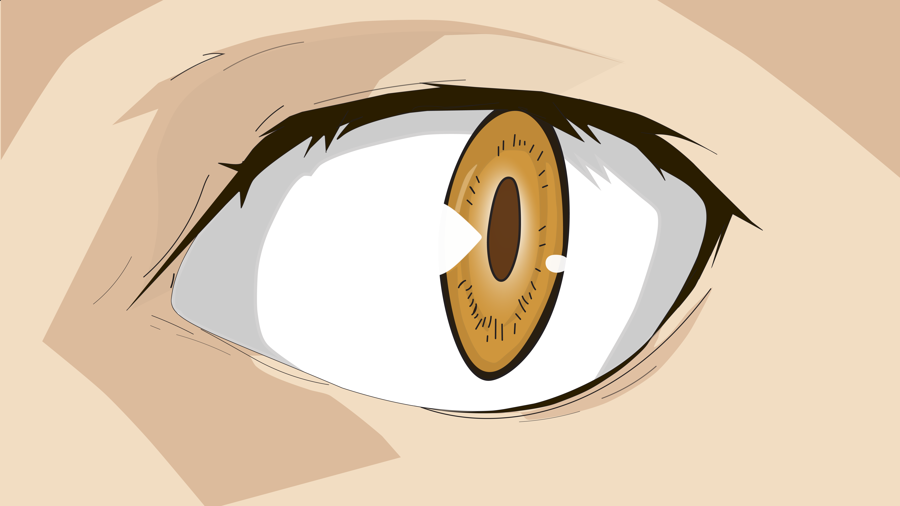
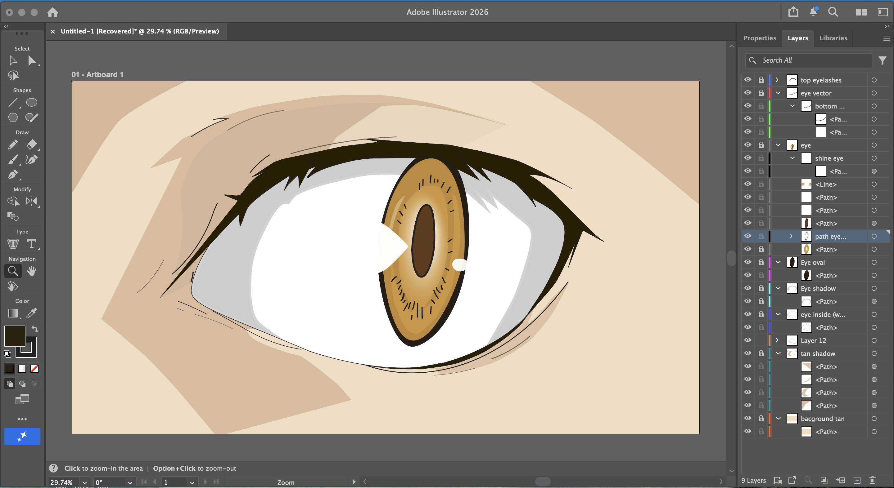

Homework 5
Vector Emotive Eye

Adobe Illustrator Process Screenshot

Creative Description
For this assignment, I created an expressive eye illustration that conveys a sense of tension, suspicion, and subtle threat. I intentionally designed the eye to feel alert and slightly unsettling, as if it is carefully observing something with caution. The sharp angles of the upper eyelid and the elongated vertical pupil enhance this feeling, giving the eye a predatory and intense presence.
I used a simplified structure based on two primary shapes: an oval form for the eye and a central elongated shape for the iris and pupil. The color palette follows complementary color theory, combining warm golden tones with darker contrasting hues to create visual tension and depth. This contrast strengthens the emotional impact and draws attention directly to the center of the eye.
Line styles were kept minimal and intentional. A thicker line defines the upper eyelid to emphasize weight and intensity, while thinner lines are used for subtle details, creating contrast without overcomplicating the design. The composition fills the artboard, making the eye the dominant focal point.
Overall, the illustration balances simplicity with emotional clarity, using basic vector shapes, limited color choices, and controlled line variation to communicate a strong psychological presence.